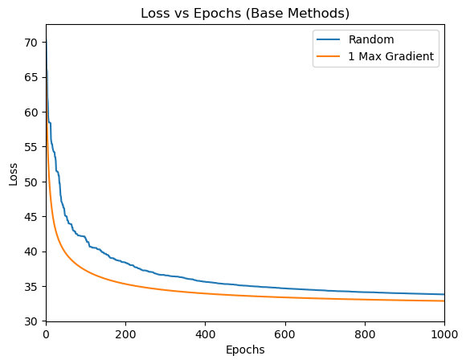
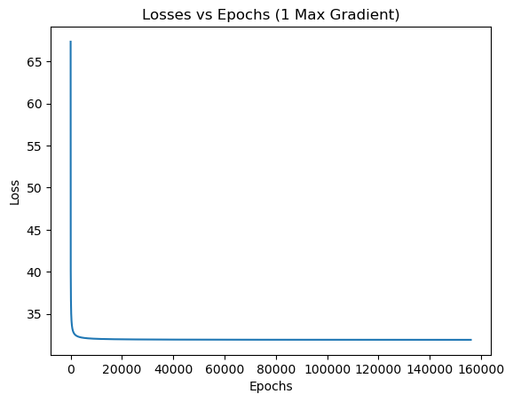

Coordinate Descent for Logistic Regression
Ryosuke Oguchi
roguchi@ucsd.edu
Winter 2024 — CSE 251A: Learning Algorithms
🧠Project Overview
This project investigates coordinate descent strategies to solve an unconstrained optimization problem for logistic regression on a binary classification task. The main goal is to compare how different coordinate selection rules impact the convergence of the loss function.
We analyze the effectiveness of:
- Random coordinate selection
- Maximum Gradient selection (Gauss-Southwell Rule)
- Gradient-based selection with adaptive step size (Lipschitz-aware)
📌 Problem Statement
We aim to solve:
min_w L(w)
Where L(w) is the logistic loss:
L(w) = sum_{i=1}^{n} log(1 + exp(-y^{(i)} w^T x^{(i)}))
🚀 Coordinate Descent Methods
🔹 1. Max Gradient (Gauss-Southwell)
🔹 2. Random Coordinate Selection
- Select coordinate
i uniformly at random.
- Use the same update rule as above.
🔹 3. Lipschitz-aware Gradient Selection (Adaptive GS)
- Select coordinate with max gradient.
- Adjust step size using the local curvature:
w^{t+1}_i = w^t_i - (1 / H(w)_i,i) * ∇_i L(w)
H(w) is the Hessian, and the update uses its diagonal elements.
Motivation: Based on Nutini et al. (2015), this adaptive learning rate can drastically accelerate convergence.
🔬 Experimental Setup
- Dataset: UCI Wine Dataset (Classes 1 vs 2), 13 features, 130 samples
- Loss: Logistic loss
- Convergence Threshold: Final loss from sklearn’s
LogisticRegression:
L* = 31.89404
📊 Results
Baseline: Random vs Max Gradient

GSL Rule (Lipschitz-aware)

Max Gradient (Full Scale)

Random Coordinate Descent

All Methods Combined

📈 Key Takeaways
- Naively selecting the largest gradient does not guarantee optimal efficiency.
- Adaptive step size using curvature (Hessian diagonal) massively accelerates convergence.
- For high-dimensional datasets, computing full gradients or Hessians may be expensive, raising practical trade-offs.
🧪 Pseudocode (Max Gradient Method)
Input: f(x), ∇f(x), x0, α, ε, max_iter
x = x0
while ∥∇f(x)∥ > ε:
g = ∇f(x)
i = argmax |g_i|
x[i] -= α * g[i]
📂 Files
| File | Description |
|---|
code.ipynb | Notebook with all experiments and plots |
CSE_251A_Project_2.pdf | Final project report |
collective_base.png | Random vs Max Gradient comparison |
gsl.png | GSL (adaptive) loss convergence |
max_grad.png | Max Gradient convergence curve |
random.png | Random selection convergence curve |
collective.png | Combined plot of all methods |
📚 References
- Nutini et al. (2015). Coordinate Descent Converges Faster with the Gauss-Southwell Rule than Random Selection. JMLR.
- Nesterov Yu. (2012). Efficiency of Coordinate Descent Methods on Huge-Scale Optimization Problems. SIAM.
🙌 Acknowledgements
- Instructor: Prof. Taylor Berg-Kirkpatrick
- Course: CSE 251A — Learning Algorithms, Winter 2024, UC San Diego